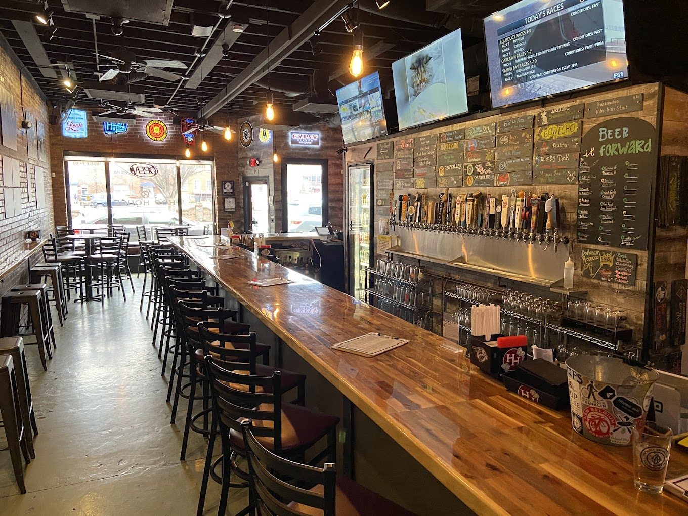
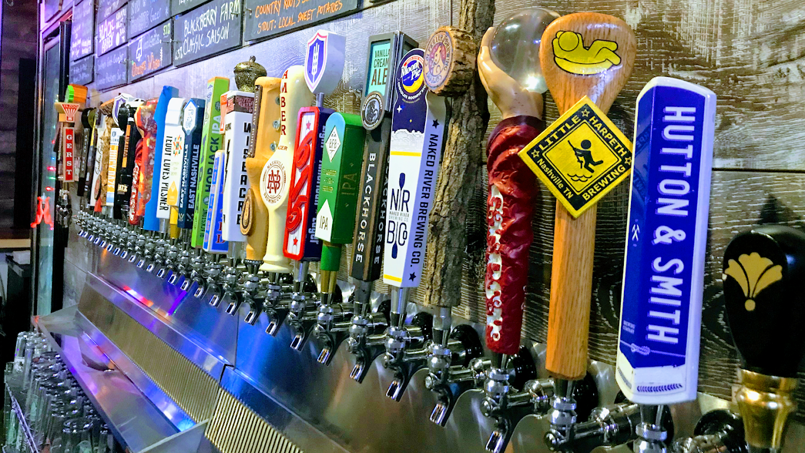
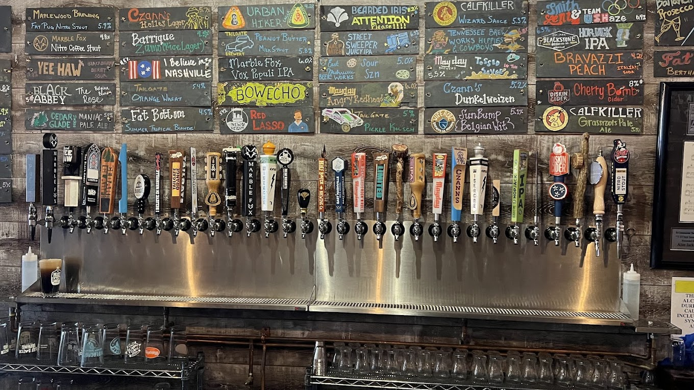

Our Draft List
30 Tennessee Taps • 8 Regional Brews • Always Rotating
Our taps change frequently! Ask our beer experts about today's unique selections.

38 Craft Beer Taps • Locally Sourced • Authentic Tennessee Flavor
117 5th Ave N B, Franklin, TN
11AM - 10PM
Vee Haw Nashville
Scroll to explore
30 Tennessee Taps • 8 Regional Brews • Always Rotating
Our taps change frequently! Ask our beer experts about today's unique selections.
Founded in 2019 by Kenny Sizemore and Mark Cook, Hop House Tennessee Taps is a celebration of Tennessee's vibrant craft beer culture. We're passionate about showcasing local breweries and creating a welcoming space for beer enthusiasts.
Our carefully curated selection features 30 rotating taps from local Tennessee breweries and 8 regional favorites. We believe in supporting local craft and providing an authentic beer experience.



117 5th Ave N B, Franklin, TN 37064
(615) 454-8592
hophouse@hophousetntaps.com